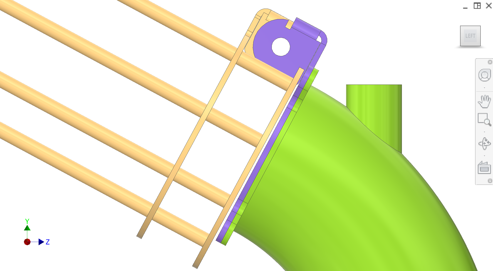
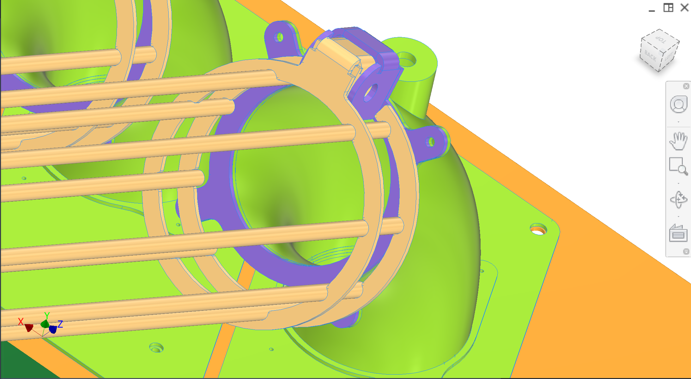
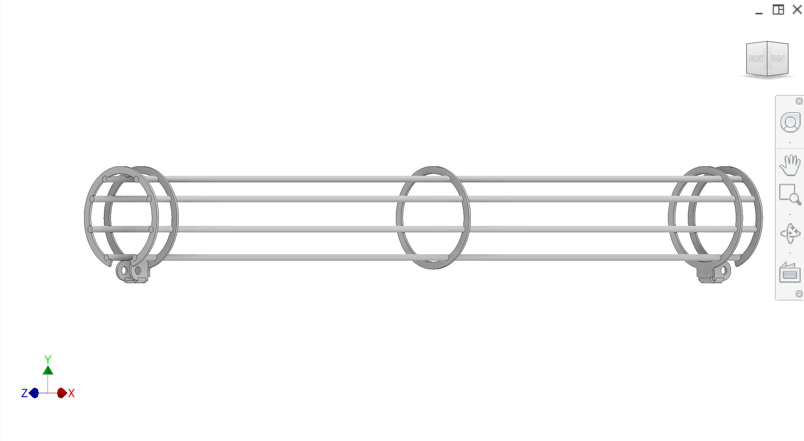

回到水果摄入系统* 妇女私营部门筹资和伙伴关系司概览
输入管
输入管是可调整的、可移动的管片,位于水果摄取系统连接上游分拣/饲料线的线路进食子组装。它们使用两个旋转点的固定轴关节,从而可以调整高度以匹配第三方的线高,并在锁定位置时保持刚性。
导言
进场管将第三方/橙色类饲料线连接到支线90°的进场管. 首要的要求是提供一个刚性、可调整的高度接口,以便能适应上游线路高度的变化,同时便于清除/重新安装,以便进行清洁和季节性维护。
颜色密钥组件( C)
主要组成部分和意图(颜色可能因CAD数字而异)。
| 颜色 | 构成部分 |
|---|
| . . . . . . | 输入管——直管片段,搭载一列橙子进入90°入口管和同步弹簧区. |
| . . . . . . | Hinge + 针头接口——意图是两个被固定的关节(一个在上游的饲线接口,一个在90°的管线接口),所以通过改变有效长度/位置,可以像三角形的低调一样调整入管高度. |
| . . . . . . | 兴格挂牌——挂板,有4个角孔供弧形;在90°的入口管组装上向焊接板铺设. |
| . . . . . . | 已复制附件——概念:90°的入口管组装和直管组装被绕到一个挂载板上(模态;可以钻出弧线进行斜体设计). |
图
以下专用插图照片水果摄取系统主廊和饲料子组装数字。图1侧视带链条;图2关键特写;图3——只有直管部分.

图1侧视图——带有链条几何的输入管(上游高度调整意图).

图2兴格特写——针关节和括号细节.

图3直管片段(柱径),不周围组装.
建议数字(承包商的清晰度)
- 添加图编号 :串链挂载板(4 rivets)焊接到90°的入口管组装——顶部/近视带点缀(上面没有完全覆盖).
- 添加图编号 :CIP 喷嘴端口在90°的管和喷射方向下穿入口管/同步-泉区(组装-与喷嘴的视图在线)饲料子组装; 如果您想要条目 - tube - 只设置上下文, 请在此添加 。
- 添加图编号 :调整范围图——两端的粘合几何显示分/最大有效高度对上游线(图1的补充).
讨论情况
粗略设计意图( M)
- 目标——将上游分拣器/线的果实送入每个饲料单位,使同步的泉水能够可靠地一次结出果实.
- 可调整高度接口——输入管必须可调节,以便能与未知的第三方饲料线高位交配. 目前意图使用绑定关节,使管子可以在两端旋转,并适应高度/位置的变化.
- 可撤换性管道和山体应迅速脱落,以便进行清洗和季节性拆卸(平板机、Rivet和模块式山体板块战略)。
已知问题和风险
- 碰撞信封——进球管和支链不得干扰果实支持/pusher,同步弹簧运动,或支线壳切除.
- 列载——一列橙子可以产生显著的侧负载和摩擦;管ID,缝合,和联合对接应应尽量减少吸附和干扰.
DFM和制造业(中国)
- 钢管制造- 承包者提出符合食品区要求的氯化萘可用管/管标准及制造方法(滚动+焊接无缝)。
- 兴格硬件- 承包商提出针头材料、保留(clip/cotter)和在振动/洗涤环境中防洗。
- Rivet/ 网络接口- 如果使用rivet进行模块化,承包商可提出卫生机理策略(避免缝合器/手提箱,必要时可密封)或替代模块化固化。
承包者的问题
- 提议对未知的第三方饲料线路(平板/平板几何、调整范围以及如何严格锁定)采用强力可调整高度接口。
- 建议管线标准和内表要求,以减少水果干扰,提高清洁性。
- 审查碰撞信封,提出清除/容忍措施,使进入管永远不会干扰整个周期的推手/弹簧/管切除。
接口
- 输入 :来自上游分拣器/线的橙子.
- 输出 :水果柱进入90°入口管,进入同步弹簧进食子组装。 。 。 。
- 挂载 :在90°的管组装和连接上游饲料线的固定接口处铺设链条;用于模块化的旋转挂板。
- 下游 :果实从饲料分组装到提取同步果实支持,然后通过收藏(口音,过滤器).
接口和容忍度
关键接口(容忍TBD;承包商提议)。
| 编 | 接口/容忍度 | 相关 |
|---|
| 输入管 − 90° 管 | 固定链条接口; 锁定时必须刚性且易拆解 | 饲料子组装 |
| CIP 喷嘴端口 | 垂直管焊接至90°入口管;喷嘴通过入口管/合成弹簧区向下喷射(几何TBD) | CIP 工业促进中心 |
回到水果摄入系统* 妇女私营部门筹资和伙伴关系司概览